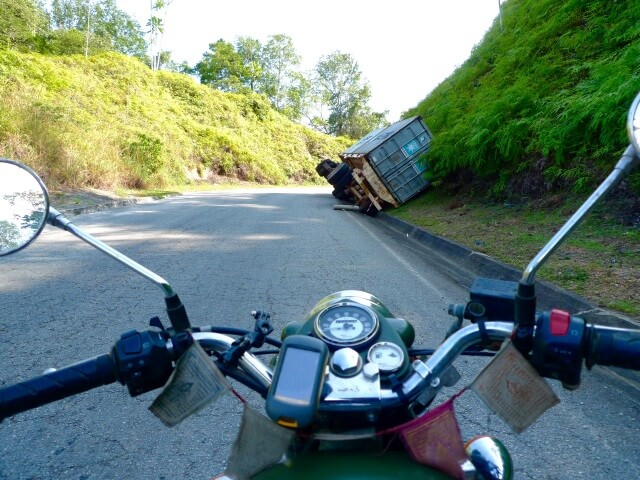

Gabon, AFRICA
Gorillas and Shotguns
(9 minute read)
...shitting my pants, literally...
Last night, my shitty, cheap hotel turned into a nightclub at around midnight while I was tucked up in bed. I think a lot of sex happens here... I didn't sleep much.
But, today, I'm off into the jungle...
Right off the bat I’m happy to just chug along in 4th gear on the Enfield - the slower the better.
I’m grinning like an idiot and waving to everyone. Today’s ride is only a hundredish click jaunt, and it’s always these short days that bring out this slow and happy headspace.
It's a great way to travel, and I’m sitting somewhere between happiness and near euphoria.
I love this shit.
I come around a corner on the Gabon tarmac, and take in a scene in the space of a few seconds.
It’s a checkpoint. It doesn’t look legit...
They’re not uniformed, and Gabon’s been pretty tight on that so far...
They’re being overly aggressive with people already stopped.
There’s lots of yelling.
The big guy doing most of the yelling’s got a massive shotgun that he’s making a point of waving around...
Fuck.
I pull up because they make me.
My heart...
This guy’s not into my "Sorry for my bad French, haha, what is your name?" icebreaker routine, he’s straight to business - no pleasantries.
“Insurance.” I give him the Laissez-Passer instead.
“Non! Insurance...” Damnit. He gets it...
“Card identity.” I give him my passport this time. I get off the bike and take a drink. He's going through the papers with the bloke with the shotgun; they’re making noises about a permit...
“Permit por-qua?” I ask. He hands me back my papers, squeezes my saddlebags a few times and then without a word just walks off...
Is that it then??
Shit, I’m not waiting around to find out...
I peel out, fast...
Despite being, I guess, legitimate, it's spooked me. Bad.
Must’ve been that shotgun.
And I was having such a nice morning...
The cheesy euphoria has given way to a drained, deep lethargy.
I feel like shit.
Exhausted in my bones.
I take the turn off for the N3; my road to the national park.
Stoked: it's still tarmac.

Around the first bend and the tarmac gives way to red dirt...
Figures...
It’s not exactly surprising that they haven’t bothered to tar a road; according to the maps, there's less-than-bugger-all out here.
It's a much slower ride and, as always, a bit of a head fuck.
Riding solo off the beaten track is a mind job.
Its remote out here, un-trafficked, and hardly any villages to speak of.
If something goes tits up that requires some assistance, help is going to be a very, very long time coming.
And there's no "legging it to the next village" either; there's fucking no one out here.
My mind sprints in the hamster wheel of useless, going nowhere, "what if's".
Forgetting all that; I'm on a gorgeous red dirt track that hasn’t turned completely into shit with the rain.
We dance together up and down and around deep green mountains, thick with rainforest. The sky is heavily overcast, making it the perfect temperature to ride. The whole thing, and the thumping, sweet Enfield, it’s all such a thing of beauty.
And all I can think of, still, is something going wrong.
It shits me.
It takes a conscious and near constant effort to try to keep my mind positive, and stay in the "here and now". The present - where absolutely nothing is wrong and everything is delightful.
And it is delightful.
Just me and the green.

After a while in the thick crowding jungle, I blink, and the whole world transforms. Gone is the jungle in a twinkling. Replaced with an utterly cleared, rolling, mountainous grassland. After the claustrophobia of the jungle it seems to go on forever.
I stop the bike and take a moment...
Stunning.
Jaw dropping...
I love being surprised. Surprised and delighted. This is awe inspiring.
The sheer size of the sudden expanse, green grassland all the way to a hilly horizon.
I'm like Bambi on the edge of the meadow.
I wonder if we people only find beauty in contrasts. In music, it's the unexpected change in the sound that induces shivers up our spine...
As I crack on into the grasslands, letting the weight of the bike roll us down a decline, I’ve got my arms spread out, flying down the hill. I'm yelling into my helmet.
"This is what it's all about!! This is it!"
And it is...
This is why I wanted to go exploring; it's to be as thoroughly gobsmacked as this.
In an instant it feels like the whole journey has been vindicated, again.
As we get closer to Lope a river comes along. It’s a huge bastard. I think it might be the same one as before, but here it seems to be somehow both wider and faster.
It’s immense and absolutely ripping along.
A fearsome beautiful thing.
I cruise into Lope somewhere in the afternoon.
There are signs to a hotel - a sort of lodge sort of thing - that’s a long way out of town. But it looks pretty decent so I’ll have a crack.
I ask how much for a night and I swear they say 520,000 CFA. I’m sure of it.
Divide that by 450…
That’s over a thousand dollars.
For one night!
Bloody hell.
Surely not.
I don't know any other number that sounds like “sank sant vant mill.” Sank, five. Sant, hundred. Vant, twenty. Mill, thousand.
Fuck a duck.
Back to Lope then, I guess...
I stay the night in Lope. But going onwards from here is going to be problematic; I don't have the fuel, and reports of the road conditions are all seriously negative. If they're telling you that a road is shit in Africa, then you know it's going to be really shit.
So I flog it back the way I came.
Retracing my steps.
I know that it’s not necessary to be going this fast, but sometimes I just feel the need for speed. I've seen the scenery already so I’ve got no qualms about gluing my eyes to the road and just hammering it.
It’s great fun.
The combo of familiarity with the track, and the fact it has dried out somewhat overnight, brought on a bit of a loss of respect and an increase in complacency.
I’m moving fast, fancy free, and back into the jungle.
Bang.
Fucking truck!
It happens in an instant.
Right out of fucking nowhere, with no warning, around a blind corner: a speeding truck.
I react like a mongoose.
I nearly get fucking murdered.
I’ve been using up all of the road to pick out the best, smoothest track. Left side, right side, right up the middle, it didn’t matter.
I'm on the wrong side of the road.
No time to think and I swerve the bike over, hard to the side, and miss the truck by nothing.
I still can’t believe he didn’t hit my back wheel.
Tweak a couple of the variables, either speed, reaction time, a bit sooner or a bit later from either of us around that corner, him in the middle of the track, a little less luck, y’know, small things, and I’m dead.
I have to pull over to walk off the shakes.
Helmet off and it’s all quiet again. Peaceful, calm, still and serene.
No one’s dying.
I’m side saddle on the bike calming down and looking absently into the jungle when the tree right behind me on the roadside starts rustling. I turn in a snap to see what it is, but it’s stopped.
I stare at it, hard, but I can't see a thing in the dense bush.
It sounded close... But it’s quiet now...
There’s movement in the corner of my eye, off to the right, way up the road, and I turn to look. High in the trees, maybe fifty steps away, there’s branch moving, like something's just jumped off it or onto it. Must be monkeys...
I’m straining to catch a glimpse. Straining to hear something.
But everything is quiet and calm again.
A snort like a furious fucking bull comes from out of fucking nowhere, right next to my head, roaring through the silence.
I shit a cinderblock
I'm on the bike in a fucking flash and I get the fuck out of there.
Do they have fucking gorillas here??
Jesus tap-dancing Christ... Why didn't anyone tell me they have fucking gorillas!?
It couldn't have been anything other than a very pissed off gorilla. Not in that jungle.
I'd love to have seen a gorilla. But not that fucking close... All I can imagine is King Kong pealing out of the jungle and ripping my limbs off.
There was menace in that snort. Like whatever the fuck it was wanted to send a clear message.
Fuck off.
Message received...
And I was worried about trucks...
Not long after shitting a metaphoric brick, I start to drop my guts with a disturbing, unusual regularity.
Big one's...
Ominous.
Trucks be damned; I fly.
As I get back to the tarmac road I’m starting to cramp up. Bad.
Not good...
Really not good.
I wring the throttle and smash the tarmac like a man possessed.
I make amazing progress, but I already know it's all in vain...
We've been here before...
I will not tempt fate again.
I concede defeat, and pull over.
Whoosh...
That gorilla's literally scared the shit out of me.
The jungle insects come out of the woodwork for this.
I think of a huge gorilla sneaking up behind me while I'm trying to empty my guts into the jungle.
What a way to die...
March flies are biting my arse.
At least I hope they're march flies...
Evacuating just enough to make it back to Ndjole without further incident will do me just fine.
All in all, not as harrowing an experience as I thought it would be would be.
It's another first, and I’m almost proud of myself.
Nah, bugger it, I am proud of myself.
So what?